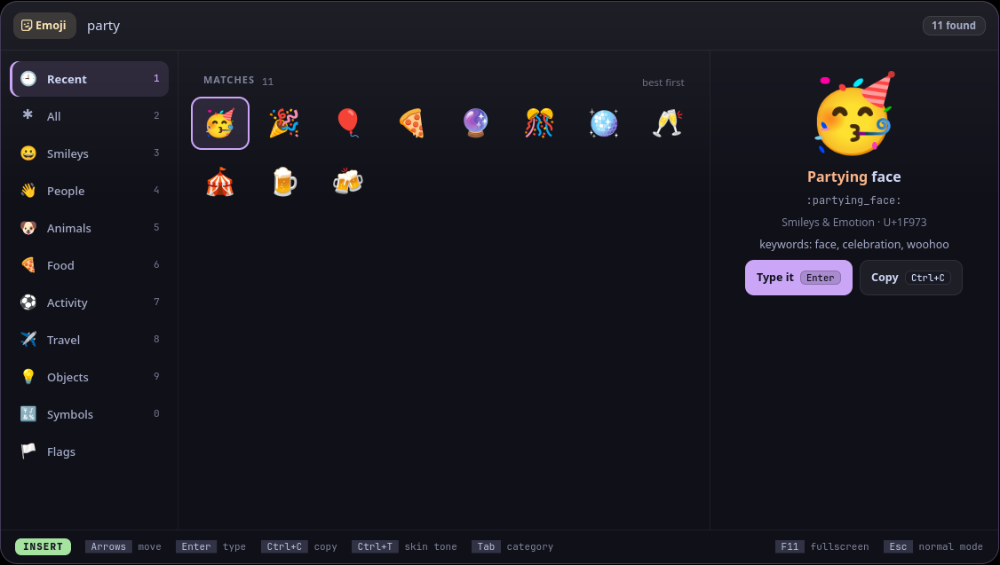
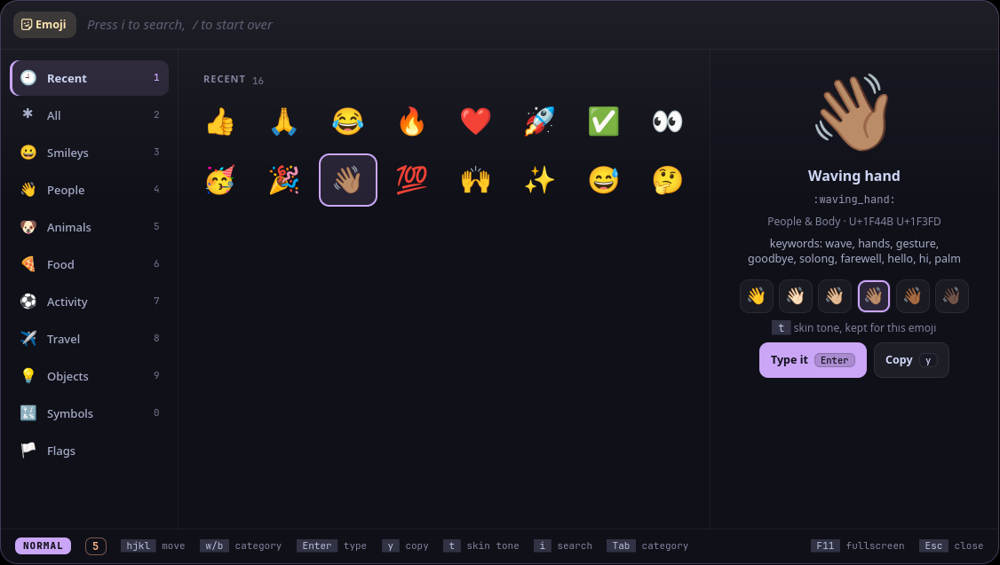

Bhava (भाव) is Sanskrit for "feeling, emotion": what an emoji is for: the feeling behind the words.
bhava is the emoji picker for Vyom: one keyboard-driven panel that opens instantly, with live data, a preview and a key for everything. It runs on any compositor with the layer-shell protocol (sway, Hyprland, river, niri, Wayfire, labwc…). In Vayu, the desktop it was built for, it replaces wofi-emoji.
#Features
- Every Unicode 16 emoji in a calm grid of big emoji, your recent ones first; where you are is framed in the accent colour.
- A category rail on the left, with names:
Tab/Shift+Tab, orCtrl+1..Ctrl+9for the first to the ninth. - Skin tones per emoji: a visible picker in the preview (
Ctrl+T, ortin normal mode), remembered for that emoji. - A big preview with the name, the
:shortcode:, the code points and the keywords, the ones your search matched in peach. Entertypes the emoji into the window you were in (and copies it);Ctrl+C(orCtrl+Enter) only copies.- Vim modes: type to search in INSERT,
Escfor NORMAL, thenhjkl, counts,gg/G,yand theSpaceleader (see Vim modes). - Names and groups from Unicode's emoji-test.txt, keywords from wofi-emoji (MIT): see NOTICE and tools/build-data.py.
- Keyboard first: every action has a key, shown in the footer for the mode you're in; the mouse works too.

#Install
#Requirements
- Vyom 0.6 or newer (Python 3.11+, PyGObject, GTK 4, gtk4-layer-shell, a Nerd Font)
- optional: wtype (typing the emoji)
#Install
git clone https://github.com/Theyashsawarkar/bhava ~/.local/share/vyom/plugins/bhava
vyom reload # pick it up (or log out and in)
vyom bhava # open it; run it again to closeGive it a key in your compositor, e.g. sway:
bindsym $mod+<key> exec vyom bhava#Update and uninstall
git -C ~/.local/share/vyom/plugins/bhava pull && vyom reload # update
rm -rf ~/.local/share/vyom/plugins/bhava && vyom reload # uninstall#Usage
Open it with vyom bhava (or your key). It opens in insert mode: type to search. Esc goes to normal mode, where letters move around the grid and Space is the leader (a strip shows what comes next). The footer always shows the keys for the mode you're in.
Vyom's keys work too (every vim tool has them): ? and Space ? list every key, Space Space is the palette, j / k move, gg / G jump, / searches again, H / L switch tabs, q closes, Space u f is fullscreen, Esc steps back.
Insert mode (typing; bhava opens in it)
| Key | Action |
|---|---|
Enter | Send the emoji to the window you were in (types it, and copies it) |
Ctrl+Enter | Copy the emoji only |
Ctrl+t | Cycle the skin tone of this emoji (remembered per emoji) |
Normal mode
| Key | Action |
|---|---|
h | Move left in the row (a count repeats: 3h) |
l | Move right in the row (a count repeats: 3l) |
j | Move down a row (a count repeats: 5j) |
k | Move up a row (a count repeats: 5k) |
0 | Jump to the start of the row |
$ | Jump to the end of the row |
Enter | Send the emoji to the window you were in (types it, and copies it) |
y | Copy the emoji only (yank) |
t | Cycle the skin tone of this emoji (remembered per emoji) |
H / L | Switch to the previous / next category (w / b too) |
g g / G | Jump to the first / last emoji (5gg or 5G: row 5) |
Leader (Space)
| Key | Action |
|---|---|
Space t 1..9 | Switch to that category |
Space y y | Copy the emoji only |
Space y c | Copy the emoji's shortcode (:grinning_face:) |
Space d d | Remove the emoji from Recent |
#Vim modes
bhava has Vyom's two modes (the same in every Vyom tool), shown in a pill at the left of the footer:
- INSERT (green): what you type goes into the search box. It opens in INSERT, so you can type straight away.
- NORMAL (the accent colour):
Escfrom INSERT. Letters don't type; they move:hjkl,H/Lbetween categories (w/btoo),gg/G,0/$,Ctrl+D/Ctrl+U, with a count first (5j). A half-typed count orgshows next to the pill. The search box is locked; click it or pressito type.Spaceopens the leader:Space y ccopies the shortcode,Space d dremoves an emoji from Recent,Space t 3jumps to the third category.
Esc steps back: a half-typed key, then the search, then the panel. To open in NORMAL instead, set in ~/.config/vyom/config.toml:
[plugin.bhava]
start_mode = "normal" # "insert" (the default) or "normal"#Troubleshooting
- Nothing opens.
vyom listshows every installed tool, and why one is skipped (a missing requirement, or a Vyom that's too old). - It opened, then something failed. Look for a
Tracebackin the daemon's log,journalctl --user -u vyom -u vyom-daemon -b(without systemd:~/.local/state/vyom/daemon.log), and open an issue with it. - No blur or rounded corners. That's the compositor: on SwayFX, add
layer_effects "vyom" { blur enable; corner_radius 20; shadows enable }.
#The Vyom family
Each tool is its own repository, so you install only the ones you want:
| Tool | What it does | |
|---|---|---|
| dvara | द्वार, gateway | The app launcher |
| ganit | गणित, mathematics | The calculator and converter |
| smriti | स्मृति, memory | Clipboard history |
| bhava (this one) | भाव, feeling, emotion | The emoji picker |
| tarang | तरंग, wave | Wi‑Fi and the hotspot |
| setu | सेतु, bridge | Bluetooth |
| doot | दूत, messenger | Your phone, through KDE Connect |
| patra | पात्र, vessel | Docker containers |
| akashvani | आकाशवाणी, voice from the sky | Notifications |
| raga | राग, melody | YouTube music and video |
| mudra | मुद्रा, gesture | Keybinding search |
| urja | ऊर्जा, energy | The battery at a glance |
| vishram | विश्राम, rest | The power menu |
| kendra | केन्द्र, centre | Quick settings |
#Contributing
Bug reports, ideas and pull requests are welcome: see CONTRIBUTING.md for the development setup and the few rules every tool follows, and CHANGELOG.md for what changed in each release. Please report security issues privately (SECURITY.md).
#License
MIT. The emoji data comes from Unicode and wofi-emoji: see NOTICE.